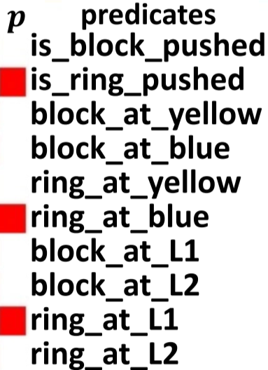
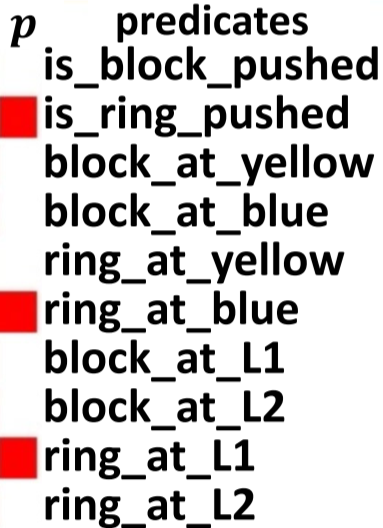

Learning from Ambiguous Demonstrations with Self-Explanation Guided Reinforcement Learning


https://github.com/YantianZha/SERLfD

Robot Task Learning


How to convey the task knowledge to robots?
How to convey the task knowledge to robots?
Convey the task via (demonstrations)Learning from Demonstrations (LfD)
Learning from Demonstrations (LfD)

Affordance-Aware Imitation Learning,
Zha et al., IROS, 2022

Coarse-to-Fine Imitation Learning,
Edward Johns, ICRA, 2021

One-Shot Imitation Learning,
Yu et al., RSS, 2018
✅ Demonstrations provide a robust learning signal,
contributing to sample-efficient learning
✅ Demonstrations provide a robust learning signal,
contributing to sample-efficient learning

❌ 1) Distribution drifting issues;
2) Learners cannot outperform demonstrators;
3) High dataset collection costs
Reinforcement Learning
Robot Task Learning
How to convey the task knowledge to robots?
Convey the task via (demonstrations)Convey the task via (rewards)
Reinforcement Learning (RL)
Reinforcement Learning (RL)
✅ Learners could outperform teachers;
More robust to distribution-drifting; No need of demonstrations


✅ Learners could outperform teachers;
More robust to distribution-drifting; No need of demonstrations
❌ Learning is not sample-efficient (especially in sparse-reward environments)
RL + LfD?
RL + LfD: Reinforcement Learning from Demonstrations (RLfD)
RL + LfD: Reinforcement Learning from Demonstrations (RLfD)
✅ Combine the benefits of RL and LfD – making RL more sample-efficient

✅ Combine the benefits of RL and LfD – making RL more sample-efficient
❌ Still inefficient to handle ambiguity in demonstrations and environments
Insights from Human Cognition
Insights from Human Cognition

Insights from Human Cognition
Humans are aware and reflective of their own learning
Humans instinctively self-explain experiences, covering problem-solving, mistakes, and the actions and outcomes of others
Insights from Human Cognition

Self-Explanation:
object-location > object-color


Self-Explanation:
object-location < object-color


Background Knowledge: Shared Vocabulary


Self-Explanation for RLfD (SERLfD)
Self-Explanation for RLfD (SERLfD)
Robots take human advice
Self-Explanation for RLfD (SERLfD)
Robots take human advice

Self-Explanation for RLfD (SERLfD)
Robots take human advice

Self-Explanation for RLfD (SERLfD)
Robots take human advice


Evaluation Domains
Evaluation Domains
Robot-Push-Simple
6 Predicates
Continuous Action Space
Robot-Push
10 Predicates
Continuous Action Space
Robot-Remove-and-Push

20 Predicates
Continuous Action Space
Pacman
2 Predicates
Discrete Action Space